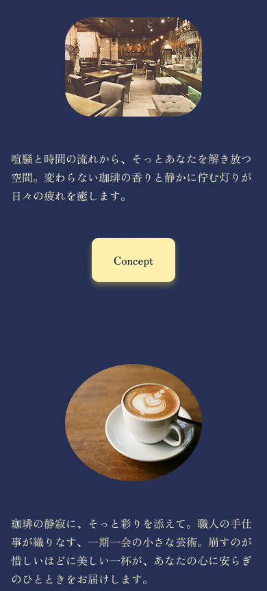
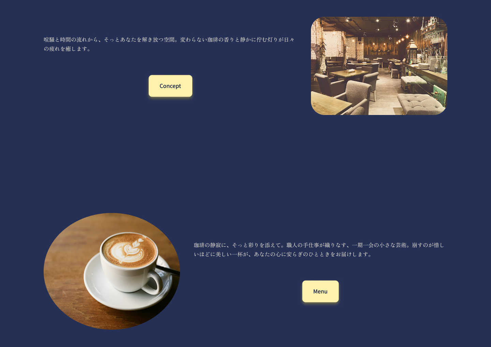

忙しい日常を忘れてゆったりと過ごしていただくため、あえて余白を広めにとったレイアウトにしました。情報を詰め込みすぎず、視線の誘導に「間」を持たせることで、サイトを回遊する時間そのものがリラックスした体験になるよう設計しています。
WORKS 03 喫茶 星月夜 Webサイト 制作事例
全体図を見るプロジェクト概要
- クライアント
- 喫茶 星月夜（架空）
- 制作期間
- 2週間（企画/デザイン）
- 担当範囲
- 企画立案、情報設計、ビジュアルデザイン制作
- 使用ツール
- Figma, Photoshop
クライアントの課題
1. Webサイトの欠如による集客機会の損失
公式な窓口となるWebサイトがないことで、お店を検索している潜在顧客への情報提供が不足しており、オンラインでの集客基盤が整っていない状態でした。そのため、本来獲得できたはずの集客機会を逃していることが大きな課題でした。
2. 独自の「世界観」や「空気感」を伝える手段の欠如
お店の最大の魅力である「静けさ」や「大人の隠れ家」というブランドイメージを、視覚的に正しく届ける媒体がなく、ターゲット層へお店の価値を十分に伝えきれていませんでした。
制作目標
1. お店の「世界観」を可視化し、ブランドへの期待感を高める
言葉だけでは伝わりにくい「静けさ」や「大人の雰囲気」をデザインに落とし込み、Webサイト上でブランドイメージを正しく伝えます。訪問した瞬間に「ここに行ってみたい」と思わせる期待感を醸成し、お店のファンを増やすきっかけを作ります。
2. オンライン上での「擬似体験」を通じた、新規集客の最大化
Webサイトを通じて、実際のお店にいるかのような落ち着いた空気感を体験してもらうことで、心理的な来店ハードルを下げます。「このお店なら、自分の探していた時間が過ごせそうだ」という確信を与え、確実な新規顧客の獲得を目指します。
デザイン戦略
1. 「星月夜」の世界観を体現するカラーパレット
店名に込められた「夜空」と、そこに灯る「月明かり」を視覚化するため、深いネイビー（#0D1A43）をベースに採用しました。文字色には、月の光をイメージした淡いゴールド（#FFF1AD）を組み合わせることで、都会の喧騒を離れた「大人の隠れ家」らしい品格と、穏やかな落ち着きを表現しています。
2. 「静寂」と「時間の流れ」を想起させるファーストビュー
ファーストビューには、静まり返った店内にコーヒーが滴る音だけが響くような、濃密な時間をイメージした写真を選定しました。静かに立ち上る「湯気」を視覚的なアクセントにすることで、店内の温かさと、外の世界とは切り離された「静寂」を際立たせています。写真の向こう側の空気感までユーザーに届けることで、来店への期待感を高める演出を意図しました。
3. 「喧騒を忘れる」ための贅沢な余白使い
4. 品格と落ち着きを醸成するタイポグラフィ
文字には繊細で上品な「Zen Old Mincho」を採用し、文字の間隔もゆったりと調整しました。ネイビーとゴールドの配色に合わせ、大人の知的好奇心を刺激するような、静かで上質な空気感を文字からも演出しています。
5. 利用シーンに合わせたマルチデバイス対応
外出先でカフェを探すユーザーを想定し、PC版だけでなくモバイル版も制作しました。スマホの小さな画面でも、PC版で表現した「星月夜」の濃密な空気感を損なわないよう、要素の優先順位や画像のトリミングを細部まで調整しています。


プロジェクトの成果
1. お店のブランドイメージを視覚的に統一
濃いネイビーとゴールドを基調とした配色に合わせ、写真素材も茶系のトーンで統一しました。これにより、言葉だけでは伝わりにくい「静けさ」や「大人の隠れ家」といったお店独自の世界観を、一貫性のあるデザインで表現することができました。
2. ターゲット層に響く「安心感」と「来店動機」の提供
サイト全体のトーン＆マナーを整えたことで、お店の情報を探しているユーザーに対し、「ここなら落ち着いて過ごせそうだ」という確かな安心感を届けることができました。Webサイトでお店の価値を正しく伝達したことで、新規顧客が「一度行ってみよう」と思うきっかけを形にしました。
プロジェクトから得た学び
1. 「引き算のデザイン」による情緒的な表現
情報を詰め込むのではなく、あえて「余白」を贅沢にとることで、お店のコンセプトである「ゆっくりと流れる時間」を表現する手法を学びました。空白を単なる「空き」ではなく、空気感を作るための「間」として捉える重要性を実感しました。
2. 非言語要素が持つメッセージの強さ
言葉による説明だけに頼らず、余白の取り方や「コーヒーの湯気」といった視覚的な要素を重ねることで、その場の静寂や温度感を伝えられることを学びました。目に見えない「空気感」をデザインでどう構築するか、という視点を得られたことは大きな収穫でした。